2026-10-09
Doctorant en démographie, Université de Genève
Président, WeData
Vice-président, responsable régional, Young AI Leaders Genève
N’utilisons pas seulement l’option par défaut.
Utilisons ce qui nous convient le mieux.
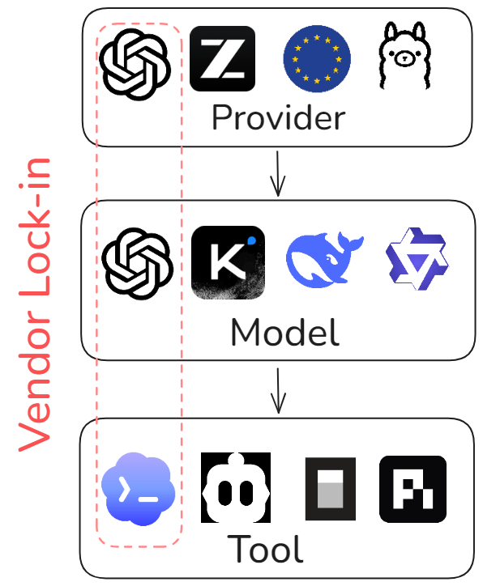
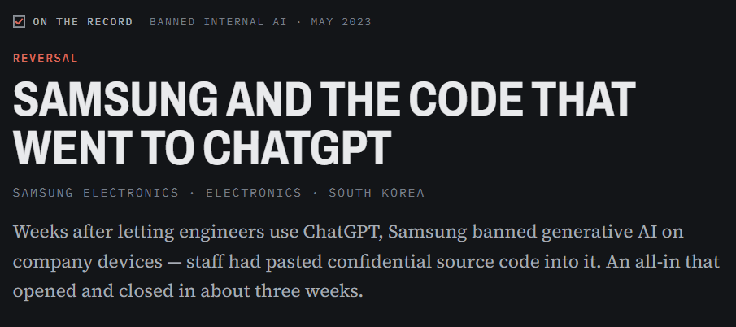
AI Incident Database, 2 mai 2023 | Bankrupt by AI, 30 mars 2023
Ces ingénieurs utilisaient simplement le réglage par défaut.
Le choix leur avait été imposé.
6 entreprises sur 6 parmi les grands chatbots américains forment leurs modèles sur tes échanges par défaut
Certaines conservent tes données sans limite de temps.
La documentation sur la confidentialité est souvent floue.
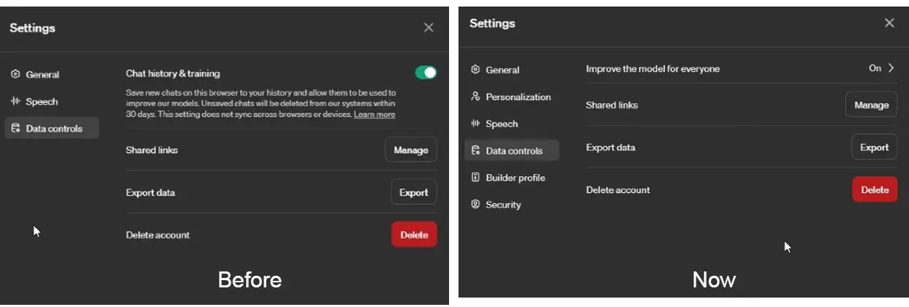
OpenAI Finally Relents; You Can Disable Model Training in ChatGPT While Retaining Chat History
Utilisation des données pour l’entraînement
DÉSACTIVÉ par défaut
ACTIVÉ par défaut
Centre d’aide OpenAI, “What if I want to disable model training?”
Aujourd’hui, tout est noyé sous des pages entières de documents juridiques
Pratique pour un consentement silencieux
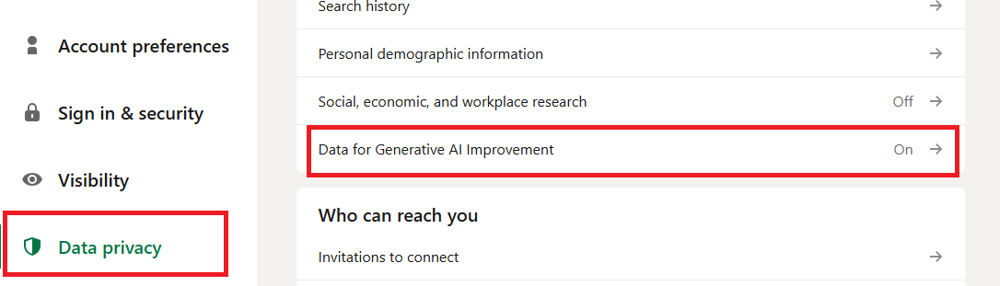
LinkedIn will use your data to train its AI unless you opt out now, septembre 2025 | X Adds New Setting To Opt out of Sharing Data To Train Grok
Le problème n’est pas l’entraînement sur les données…
Mais le consentement silencieux
Et les pratiques de conservation
C’est la capacité à contrôler où vont tes données, qui peut les consulter, et quelles lois s’appliquent quand tu utilises l’intelligence artificielle.
Souveraineté des données > Souveraineté technologique
À quelle distance les données voyagent-elles physiquement ?
Que devient notre requête une fois que le modèle l’a lue ?
Que devient notre requête une fois que le modèle l’a lue ?
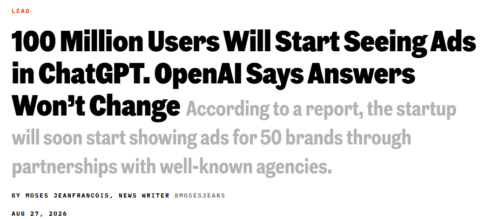
Que devient notre requête une fois que le modèle l’a lue ?
Profilage : les entrées construisent un dossier lié à notre compte
Entraînement : ce ne sont plus nos données, elles font partie des poids de quelqu’un d’autre
OpenAI a nié l’accès direct aux fichiers, mais a admis que son IA avait été entraînée dessus
Quelles lois pourraient obliger à divulguer nos données ?
Le CLOUD Act, 2018 (États-Unis) :
un fournisseur américain doit remettre les données, “qu’elles se trouvent à l’intérieur ou à l’extérieur des États-Unis”.
Ce qui compte, c’est qui contrôle le fournisseur, l’emplacement du serveur n’a aucune valeur légale.
The CLOUD Act: A Plain-English Guide to Your Data & Government Access
La loi sur la cybersécurité, 2017 (Chine)
les fournisseurs doivent coopérer avec les enquêtes de sécurité d’État, fournir un support technique et des capacités de déchiffrement, et stocker les “données importantes” sur des serveurs situés en Chine.
Ici, le lieu du serveur a de l’importance : il doit être physiquement en Chine pour la plupart des tâches d’IA.
Règlement général sur la protection des données (RGPD)
Exige que les données restent dans l’EEE (ou disposent de mécanismes de transfert spécifiques) et limitent les transferts vers des pays sans protection “adéquate”.
Une entreprise peut être 100 % conforme au RGPD (avec un DPA public, des politiques de conservation zéro, et du personnel européen) mais rester soumise au CLOUD Act américain si elle a une maison mère aux États-Unis
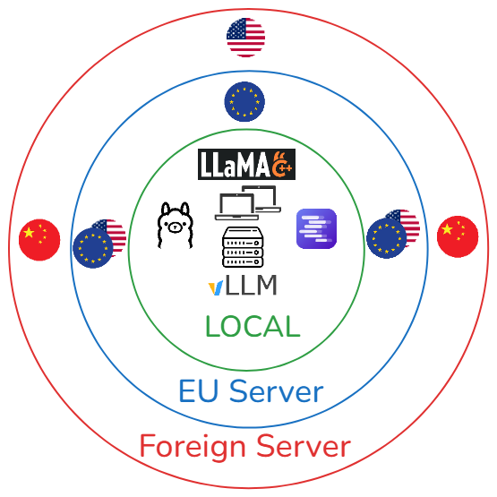
Les trois axes se chevauchent
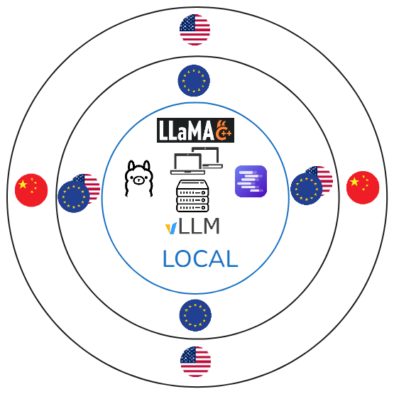
Local
Défense, secrets d’État, classifié
Données sensibles, choses qui ne devraient jamais quitter ton ordinateur, …
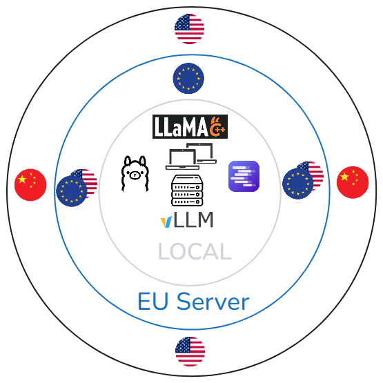
Serveur européen
Données personnelles (RGPD standard)
Données clients, données employés, tout ce qui contient des noms
Données réglementées
Données de santé, secret bancaire, secret professionnel, enquêtes RH Conservation zéro
Propriété intellectuelle
Code source, designs non publiés, l’affaire Samsung chiffrement / conservation zéro
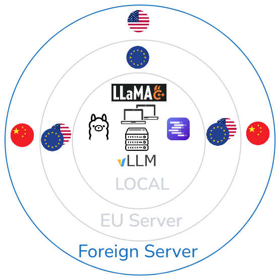
Serveur étranger
Données déjà publiques.
Brouillons de contenu marketing, documentation publiée, recherche générique, …
Internes, non personnelles, non secrètes
Comptes rendus de réunion qui seront publiés de toute façon, communications internes sans importance critique.
Modèle open-weight
Modèle gratuit téléchargeable et utilisable, et modifiable par fine-tuning. (Llama, Qwen, Kimi, GLM, …)
Open-weight > Open-source (+ données et étapes documentées)
Modèle fermé
Propriété d’une entreprise, le modèle est non transparent. (GPT, Claude, Grok, …)
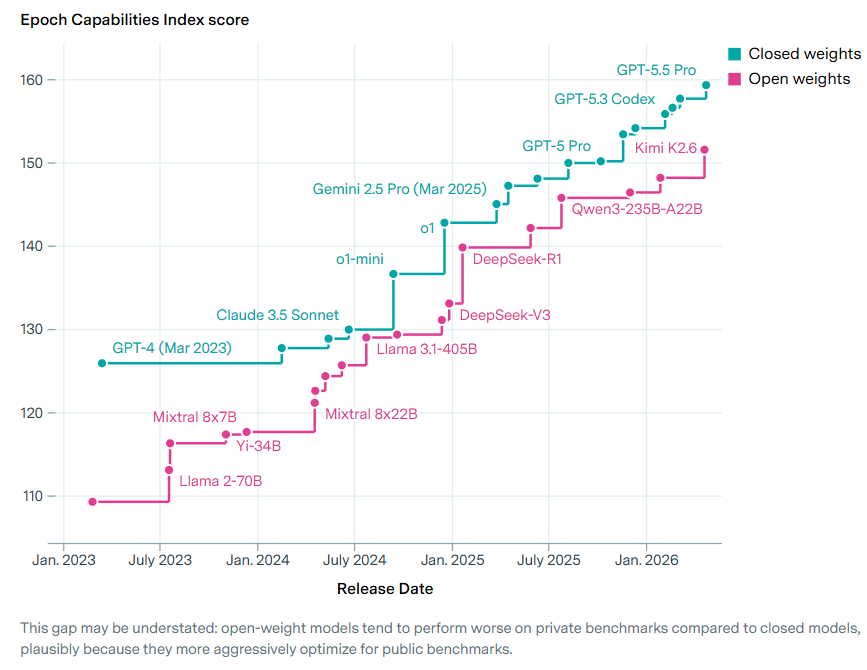
Avant : “Comme GPT-3 vs GPT-5” - des ères différentes
Maintenant : “Comme GPT-5 vs GPT-5.5” - la même ère, une version mineure
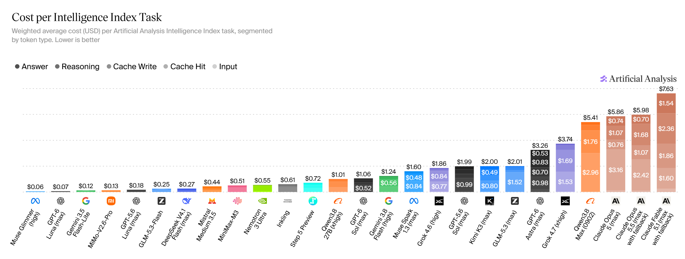
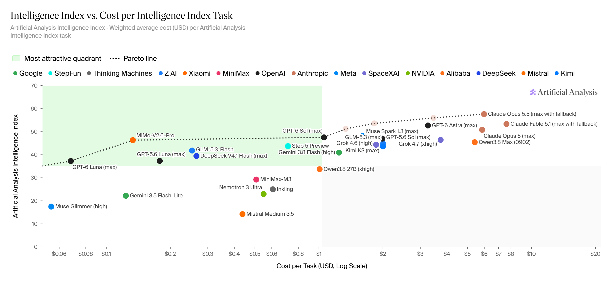
Kimi K3 - Le plus grand modèle ouvert jamais créé
Qwen3.8-27B - Un seul GPU grand public
GLM5.3 - Max : performances de pointe, Flash : rapide et vraiment bon marché
1. Le moins cher par token > le moins cher par tâche
2. Les benchmarks peuvent avantager les modèles ouverts (benchmark gaming)
3. L’utilisation d’outils agentiques reste un écart
1. Auto-hébergé : contrôle absolu, ton matériel. Aucune donnée ne sort.
2. Cloud européen complet : propriétaires européens, stack européen.
3. Neoclouds GPU : calcul européen ou hybride, on apporte nos propres modèles. La juridiction varie.
4. Routeurs et passerelles : une enveloppe juridique européenne, plusieurs modèles en dessous.
5. Hyperscaleurs masqués : un masque européen sur une infrastructure américaine.
Télécharge l’outil
Télécharge le modèle
Lance tout en local
Avantages :
Inconvénients :
Ressources pour démarrer avec les modèles locaux
Infrastructure de propriété européenne proposant des endpoints d’IA natifs, et certains permettent d’apporter notre propre modèle.
Avantages :
Inconvénients :
Infomaniak | OVHcloud | Scaleway | STACKIT | T Cloud Public | OUTSCALE | Cloud Temple | NumSpot | IONOS | Exoscale
Fournisseurs de calcul spécialisés sur la puissance GPU brute, souvent en permettant d’apporter notre propre modèle (BYOM).
Verda | Nebius | Nscale | CloudFerro | Berget AI (juridiction britannique)
Avantages :
Inconvénients :
Verda | Nebius | Nscale | CloudFerro | Berget AI (juridiction britannique)
Services qui s’intercalent entre l’utilisateur et plusieurs fournisseurs en arrière-plan, en routant les requêtes selon nos règles (généralement).
Avantages :
Inconvénients :
S3NS | Bleu | AWS European Sovereign Cloud | Azure EU Data Boundary
Avantages :
Inconvénients :
S3NS | Bleu | AWS European Sovereign Cloud | Azure EU Data Boundary
| Catégorie | Options | Distance (flux de données) | Conservation (ce qu’ils gardent) | Juridiction (bouclier légal) | |
|---|---|---|---|---|---|
| 1. Auto-hébergé | Ollama, LM Studio, vLLM, llama.cpp, SGLang | Local (ta machine) | Zéro (sauf si tu actives l’historique / les journaux) | Ta juridiction (contrôle physique) | |
| 2. Cloud EU complet | OVHcloud, Scaleway, STACKIT, T Cloud Public, OUTSCALE, Cloud Temple, NumSpot, IONOS, Exoscale, Infomaniak | UE (les données restent dans des centres en UE) | Configurable (la plupart proposent “conservation zéro” ou des options strictes “pas d’entraînement” ; vérifier le SLA spécifique) | UE (protégé du Cloud Act ; géré par des tribunaux européens) | |
| 3. Néoclouds GPU | Verda, Nebius, Nscale, CloudFerro, Berget AI | UE / Royaume-Uni (varie selon la région choisie) | Variable (souvent conservation zéro pour l’inférence ; vérifier les politiques d’entraînement) | Mixte (Nebius / Verda / CloudFerro : UE ; Berget AI : Royaume-Uni) | |
| 4. Routeurs & passerelles | cortecs, TextCortex, Requesty | UE (couche de routage en UE) | Configurable (modes de conservation zéro disponibles) | UE (natif RGPD, mais dépend du fournisseur en amont) | |
| 5. Hyperscaleurs masqués | S3NS, Bleu, AWS EC, Azure EUD | UE (données physiquement en UE) | Variable (souvent conservées pour l’amélioration des modèles sauf désabonnement) | États-Unis / mondial (maison mère soumise au Cloud Act) |
N’utilisons pas seulement l’option par défaut.
Utilisons ce qui nous convient le mieux.
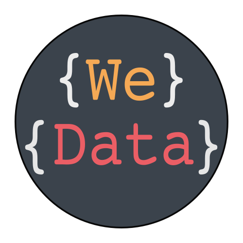